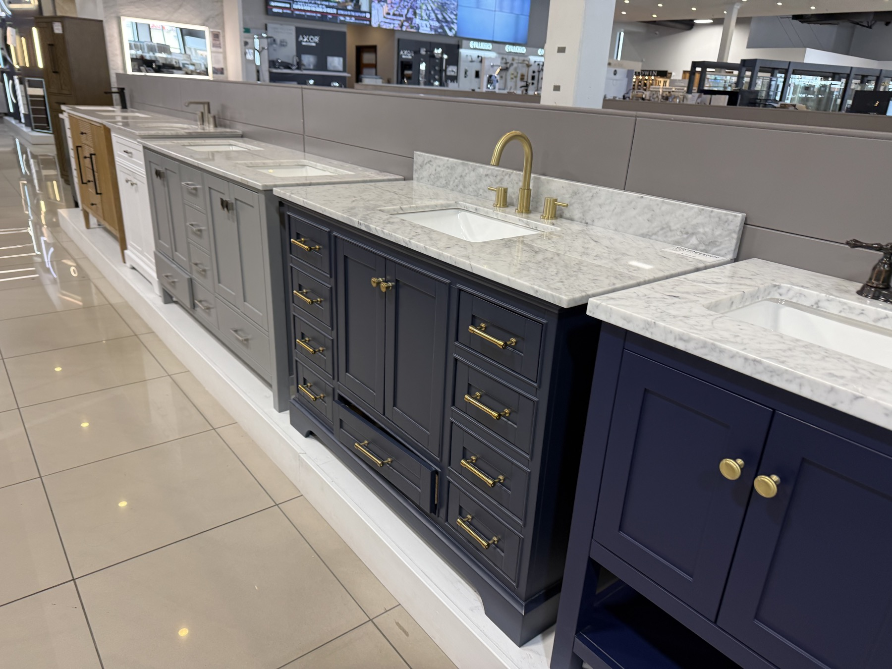
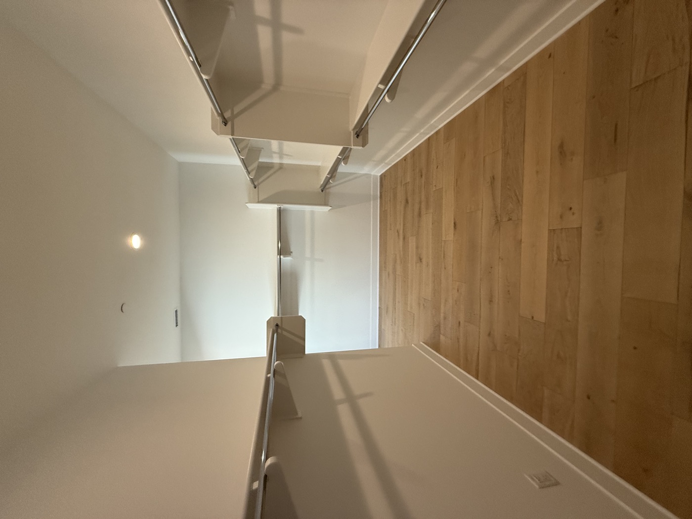
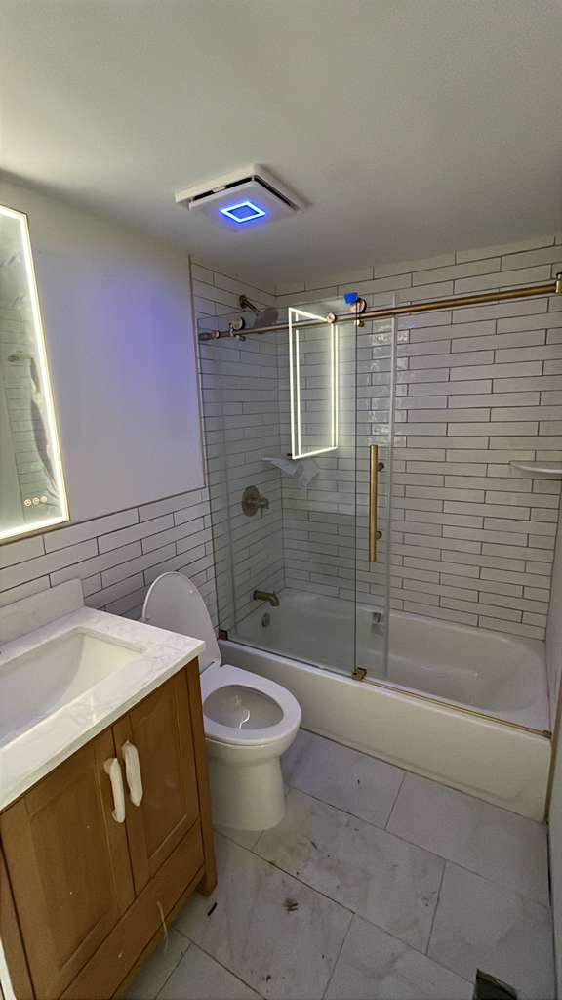

Selections
Finish Planning Support
Some residential projects need help with finish direction and fixture coordination before material orders and installation begin.
From kitchens and bathrooms to flooring, drywall, painting, roofing, exterior updates, whole-home renovations, full-gut rehabs, and new construction, we help Philadelphia-area homeowners move their projects forward with clear communication and organized support.
Golden Brick Construction works with homeowners who want reliable help with planning, scheduling, and the renovation work itself. We make the process easier to understand and easier to move forward.
Whether you are updating one room or improving multiple parts of the house, we help keep the work organized, communicate clearly, and bring the right people together to get the job done well.
Homeowners usually want to see more than one kind of finished result. These photos show completed spaces, smaller bath upgrades, and the finish-selection support that helps residential projects stay cohesive.
Used where each image helps trust, not just where a photo can fit.
Some residential projects need help with finish direction and fixture coordination before material orders and installation begin.

Completed interior spaces still need the same coordination on flooring, trim, paint, storage, and final walkthrough details.

Even compact bathroom upgrades depend on clean sequencing around tile, glass, fixtures, and the final detail work.
Whether you are updating one room or several parts of the house, we help homeowners plan the work, understand the scope, and complete the renovation with better coordination.
We help homeowners redesign and renovate kitchens with coordinated demolition, build-back, finish work, and project oversight.
See Kitchen Remodeling DetailsFrom layout updates to full rebuilds, we manage bathroom renovations with attention to sequencing, cleanliness, and finish quality.
See Bathroom Remodeling DetailsWe coordinate the interior finish work that helps refresh worn spaces and tie larger renovation scopes together.
We help homeowners coordinate larger renovations where multiple rooms, trades, and decisions need to stay aligned under one plan.
See Full Renovation DetailsWhen a home needs a more complete reset, we help homeowners plan the scope, sequence the work, and move through the rebuild with clearer coordination.
See Full Gut Rehab DetailsWe support residential exterior improvements that protect the home and improve the finished appearance of the property.
We help homeowners move new-build projects from early planning into coordinated construction and final delivery.
When a project requires plans, design input, or submissions, we help coordinate the early steps that keep the job moving forward.
We can help organize selections, shopping days, and finish decisions so the project stays cohesive and practical to execute.
One of the biggest challenges in a home renovation is keeping all the moving parts organized. We help homeowners avoid the stress of coordinating every trade, schedule, and decision on their own.
Our process is designed to make the project clearer from the beginning: define the scope, map out the path forward, prepare the site properly, and keep execution moving with fewer surprises.
For occupied homes especially, we focus on protection, cleanliness, communication, and careful staging so the job is handled more responsibly while work is underway.
We approach residential projects as a managed process so clients can move from idea to finished space with more clarity, better coordination, and stronger oversight.
We review the property, understand the goals, and discuss the renovation scope, constraints, and priorities.
We help shape the renovation path with scope clarification, sequencing, early budgeting direction, and practical recommendations.
When needed, we coordinate plans, finish decisions, shopping support, site preparation, and the next steps needed before construction begins.
We organize the right teams, specialists, and schedule so the renovation progresses in a more controlled and efficient way.
We keep an eye on the details, track punch items, and help ensure the completed work matches the intended scope and finish level.
We bring the project to closeout with final review, handoff, and a completed space that is ready for everyday use.
Our residential work covers everyday home updates as well as larger renovations, with the same focus on planning, finish quality, and day-to-day coordination.
We help homeowners update the most heavily used spaces in the home with practical planning and managed execution.
For homeowners renovating several rooms or reworking the entire house, we help manage the moving parts from start to completion.
We also support homeowners taking on exterior upgrades or starting from the ground up with a new home project.
If you are researching a specific type of renovation, these pages go deeper into the services homeowners ask about most often.
A cleaner path for homeowners planning larger remodels that need guidance from planning through final delivery.
Explore Full Home RenovationLayout guidance, selections, demolition, build-back, and managed execution for kitchen updates and full remodels.
Explore Kitchen RemodelingBathroom renovation support built around sequencing, finish quality, and a cleaner project experience.
Explore Bathroom RemodelingStep-by-step guidance and coordinated construction support for homes that need a more complete reset.
Explore Full Gut RehabWe combine planning, project management, and hands-on renovation experience to help homeowners move forward with more confidence and less chaos.
We bring structure to complex projects so clients have a clearer path from consultation to final completion.
Occupied homes need thoughtful staging, protection, and communication, not a messy or improvised process.
We help line up the right specialists, materials, and timing so the work can progress with fewer disconnects.
We help clients make practical decisions around scope, finishes, and sequencing without losing sight of the end result.
These are the practical questions that usually come up before a homeowner fills out the quote form.
No. We help homeowners with kitchens, bathrooms, flooring, painting, drywall, exterior updates, and larger home renovations too. If you are not sure whether your project is a fit, reach out and we can point you in the right direction.
Yes. When a project needs design guidance, shopping support, finish coordination, or early planning input, we can help organize those decisions so the work stays cohesive and practical to build.
Yes, when the scope is appropriate. For occupied homes we focus on staging, protection, cleanliness, and communication so the job is handled more responsibly while work is underway.
Yes. We serve Philadelphia along with nearby Pennsylvania suburbs including Bucks County, Montgomery County, Delaware County, and the Main Line.
Include the project address, the rooms or spaces involved, the kind of renovation you are considering, and any timing or budget goals you already know. That gives us a better starting point for reviewing the project.
Whether you are updating a kitchen, remodeling a bathroom, refreshing finishes, improving the exterior, renovating multiple rooms, or planning a new build, our team is ready to help you move forward with clear guidance and reliable support.
Request a Quote